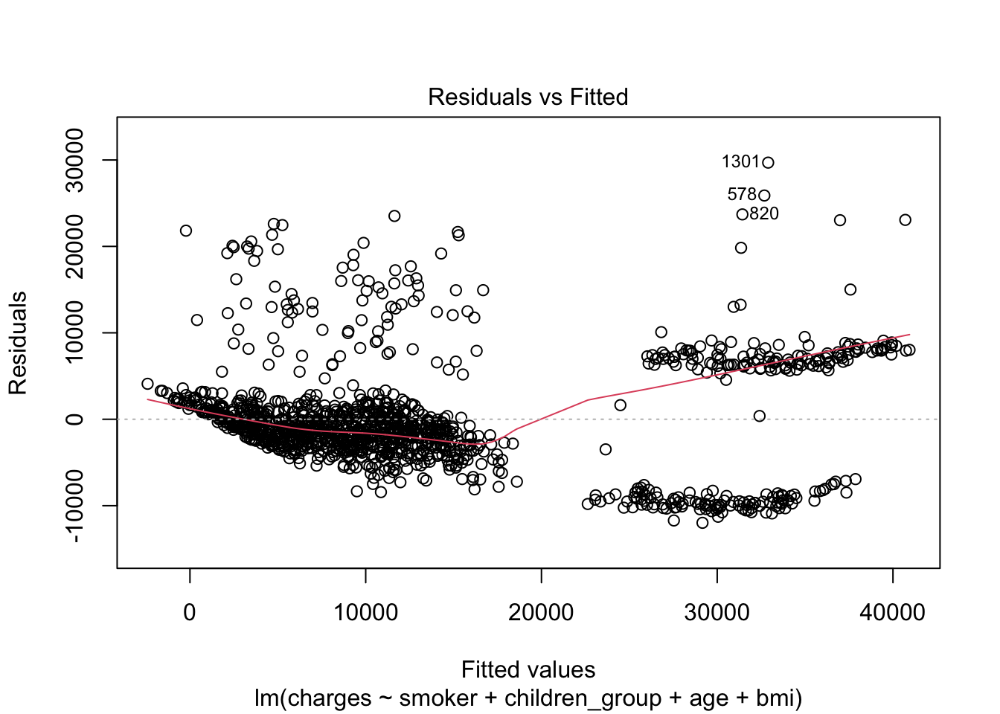
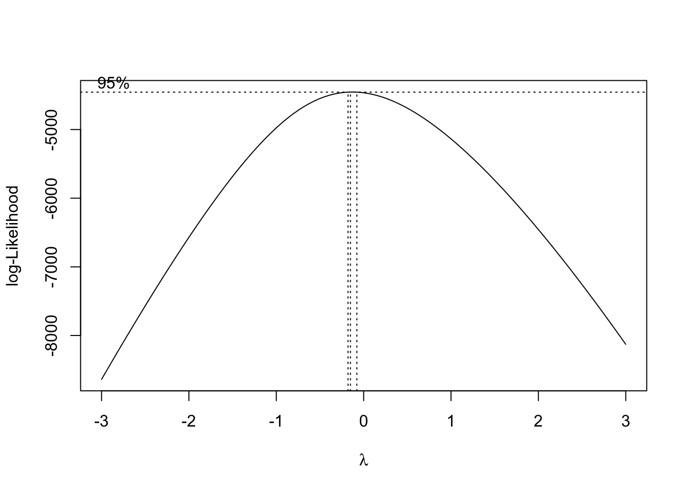
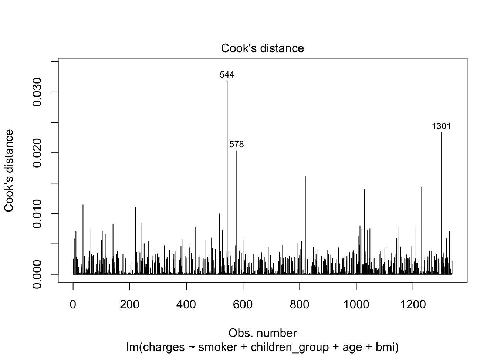

Insurance cost analysis
Model Building
Model selection
Correlation plot and information about each variable
| Variable name | Variable information |
|---|---|
| smoker | 0 = non-smoker, 1 = smoker |
| children_group | 0 = No children, 1 = Have at least 1 child |
| sex | 1 = male, 2 = female |
| age | Age range from 18 to 63 |
| bmi | Body mass index range from 15.96 to 53.13 |
| charges | Cost of health insurance |
There is no collinearity between any of the variables. Therefore, no need to adjust variable for model building. In addition, smoking seems to be the highest correlated variable to charges among other variables.
Fit regression using all predictors
| term | estimate | std.error | statistic | p.value |
|---|---|---|---|---|
| (Intercept) | -12307.8163 | 995.84054 | -12.3592240 | 0.0000000 |
| smoker1 | 23685.9237 | 425.11537 | 55.7164601 | 0.0000000 |
| children_group1 | 949.4232 | 344.79196 | 2.7536118 | 0.0059792 |
| sex2 | 170.0998 | 341.74401 | 0.4977403 | 0.6187543 |
| age | 260.0221 | 12.32652 | 21.0945321 | 0.0000000 |
| bmi | 321.0280 | 27.97673 | 11.4748220 | 0.0000000 |
The model building result shows that sex is not a significant variable with p-valur > 0.05. Therefore, when we do the stepwise regression, we would likely to remove the variable of sex.
Stepwise regression
## Start: AIC=21962.9
## charges ~ smoker + children_group + sex + age + bmi
##
## Df Sum of Sq RSS AIC
## - sex 1 9.0380e+06 4.5793e+10 21961
## <none> 4.5784e+10 21963
## - children_group 1 2.7661e+08 4.6060e+10 21968
## - bmi 1 4.8035e+09 5.0587e+10 22087
## - age 1 1.6233e+10 6.2017e+10 22344
## - smoker 1 1.1325e+11 1.5903e+11 23531
##
## Step: AIC=21961.15
## charges ~ smoker + children_group + age + bmi
##
## Df Sum of Sq RSS AIC
## <none> 4.5793e+10 21961
## + sex 1 9.0380e+06 4.5784e+10 21963
## - children_group 1 2.7576e+08 4.6068e+10 21967
## - bmi 1 4.7946e+09 5.0587e+10 22085
## - age 1 1.6261e+10 6.2054e+10 22342
## - smoker 1 1.1378e+11 1.5957e+11 23533##
## Call:
## lm(formula = charges ~ smoker + children_group + age + bmi, data = cost_df)
##
## Coefficients:
## (Intercept) smoker1 children_group1 age
## -12204.7 23669.4 947.9 260.2
## bmi
## 320.4The stepwise regression process confirm that sex is not significant variable.
Here is the final model with significant variables:
| term | estimate | std.error | statistic | p.value |
|---|---|---|---|---|
| (Intercept) | -12204.7408 | 973.77880 | -12.533381 | 0.0000000 |
| smoker1 | 23669.4400 | 423.69654 | 55.864133 | 0.0000000 |
| children_group1 | 947.9286 | 344.67562 | 2.750205 | 0.0060413 |
| age | 260.1708 | 12.31921 | 21.119120 | 0.0000000 |
| bmi | 320.3547 | 27.93564 | 11.467599 | 0.0000000 |
Model diagnostic

The graph above did not show homoscedasticity of residual. Therefore, we need to transform the model.
Model transformation
Box-Cox Transformation
Since lamda = 0, try natural log transformation.
Before transformation, remove outliers first

The outliers are rows 544, 578, 1301. Following model building will use dataset without these outliers.
Transform charges to ln(charges)

Diagnostic for natural log transformed model

Lamda is near 1 now, and the residual distribution improved from untransformed data. We conclude this model is suitable.
###The final model**
| term | estimate | std.error | statistic | p.value |
|---|---|---|---|---|
| (Intercept) | 6.9338823 | 0.0721953 | 96.043415 | 0e+00 |
| smoker1 | 1.5501799 | 0.0313774 | 49.404289 | 0e+00 |
| children_group1 | 0.2260899 | 0.0255357 | 8.853886 | 0e+00 |
| age | 0.0355121 | 0.0009124 | 38.919881 | 0e+00 |
| bmi | 0.0105884 | 0.0020714 | 5.111788 | 4e-07 |